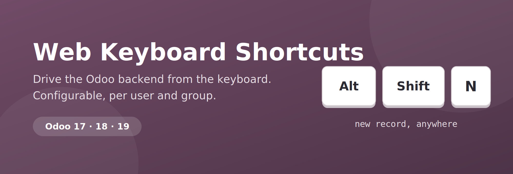
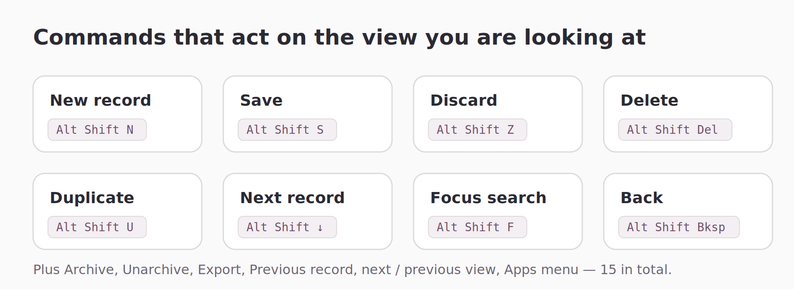
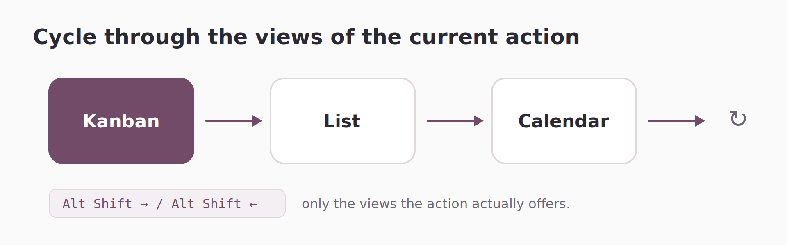
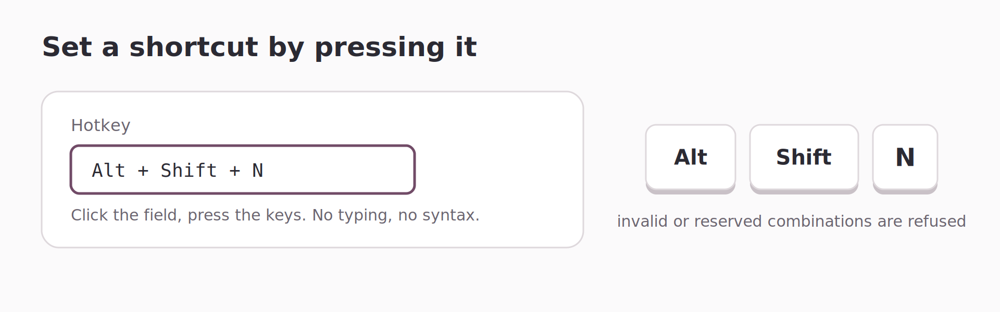

Bind any key combination to the things you do a hundred times a day: create a record, save it, delete it, jump from kanban to list, open a menu, run an action. Everything is configured from the Odoo UI — no code, no developer mode.
New, Save, Discard, Delete, Duplicate, Archive, Export, pager, search, back — applied to whatever view is on screen.
Cycle kanban → list → calendar → pivot with one combination, or jump straight to a given view type.
A sensible set of shortcuts is created for you. Keep them, edit them, or delete them — they are plain records.

A shortcut can run a built-in UI command against the view you are currently looking at.
The module talks to the real view controller, so a command respects the view's own rules:
a list with create="0"
will not create, a record you cannot delete will not be deleted, and Delete on a list asks
for the same confirmation as the cog menu.
| Records | New · Save · Discard · Delete · Duplicate · Archive · Unarchive · Export |
| Navigation | Next view · Previous view · Next record · Previous record · Back · Apps menu |
| Search | Focus the search bar from anywhere |
| Anything else | Any window action, any menu item, any external URL |

The next / previous view commands walk the views the current action actually offers, in the order of the view switcher. On Sales it takes you list → kanban → graph → pivot; on Calendar-enabled models the calendar is in the loop too. Coming from a form view, the first multi-record view is picked. You can also bind a key to one specific view type.

Go to Settings → Shortcuts → Keyboard Shortcuts, click the Hotkey field and press your combination. The widget records it for you and refuses anything Odoo would not dispatch: reserved combinations, unsupported keys, duplicates, and Shift-only combinations that would fire while you type.
A hotkey already taken in your database is skipped, never overwritten. Delete one and it will not come back on the next update.
Alt + Shift + N
New record
|
Alt + Shift + →
Next view
|
Alt + Shift + S
Save
|
Alt + Shift + ←
Previous view
|
Alt + Shift + Z
Discard
|
Alt + Shift + ↓
Next record / page
|
Alt + Shift + Del
Delete
|
Alt + Shift + ↑
Previous record / page
|
Alt + Shift + U
Duplicate
|
Alt + Shift + F
Focus search bar
|
| Odoo versions | 17.0, 18.0 and 19.0 |
| Editions | Community and Enterprise |
| Hosting | On-premise and Odoo.sh |
| Dependencies |
web only — no third-party library
|
| License | LGPL-3 |
Drop the web_shortcuts folder in your addons path, update the apps list, install. Nothing else to configure — the shortcuts are live as soon as the page reloads.
After creating or editing a shortcut, refresh the page or hit the reload icon in the systray panel.